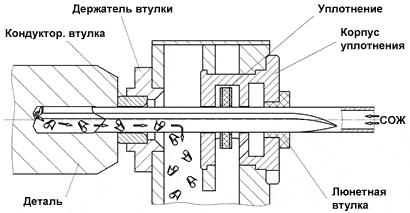

Сверление ружейными сверлами - это процесс глубокого сверления одноперыми сверлами в диапазоне диаметров от 0,6 до примерно 80 мм. Возможна обработка отверстия с соотношением глубины отверстия к диаметру до 100 x D. Специально разработанные сорта твердых сплавов и покрытий оптимизированы для применения на определенных обрабатываемых материалах и позволяют проводить обработку на оптимальных режимах и с оптимальным стружкообразованием в процессе резания.
Подвод смазывающе-охлаждающей жидкости (СОЖ) производится через отверстия в инструменте. Вывод СОЖ и стружки производится через отверстие, образованное пазом в корпусе сверла и стенками просверливаемого отверстия.
В связи с простым процессом подвода СОЖ к зоне резания и выводом СОЖ, сверла могут применяться как на специальных станках для глубокого сверления, так и на обрабатывающих центрах всех типов. Ограничением при использовании сверл малых диаметров является станция СОЖ, которая должна обеспечивать высокое давление подвода смазывающе-охлаждающей жидкости. Также не рекомендуется на обрабатывающих центрах сверлить отверстия с отношением длины отверстия к диаметру более 40.
Следующий ниже рисунок поясняет принцип глубокого сверления ружейными сверлами на типичном станке для глубокого сверления.
Технология сверления ружейными сверлами имеет ряд особенностей. Необходимо иметь в виду, что с увеличением глубины сверления увод оси при сверлении не вращающихся заготовок резко возрастает по сравнению с уводом оси при сверлении по другим схемам.
Посадка втулки в направляющем устройстве должна соответствовать H6/h6. Зазор между сверлом и отверстием кондукторной втулки должен быть минимальным, но не менее 0,002-0,004мм для отверстий диаметром соответственно 3-12мм; 0,005-0,008мм для отверстий диаметром 16-30мм. С увеличением зазора возрастают погрешности
Требования к торцу детали с входом глубокого отверстия:
1. Торец детали должен быть плоским, с шероховатостью поверхности не грубее 6,3мкм Ra, без
выступов и впадин.
2. При наличии на «входном» торце детали выступающих поверхностей, упирающихся в
стружкоотсекатель или его стойку необходимо заказывать специальную удлиненную кондукторную
втулку, для возможности упора ее торца (с приглубленным резиновым уплотнением по СТП 08-08-75)
в торец детали.
Направляющее гнездо в детали для ружейного сверла.
Размеры направляющего гнезда:
-диаметр на 0,007-0,023мм больше диаметра головки ружейного сверла, допускается уменьшение
зазора до 0,001мм при предельном износе развертки;
-глубина равна длине твердосплавных пластин головки ружейного сверла (30-35мм).
Направляющее гнездо обязательно обрабатывать (центрировать, сверлить, зенкеровать,
разворачивать) при обработке всех глубоких отверстий.